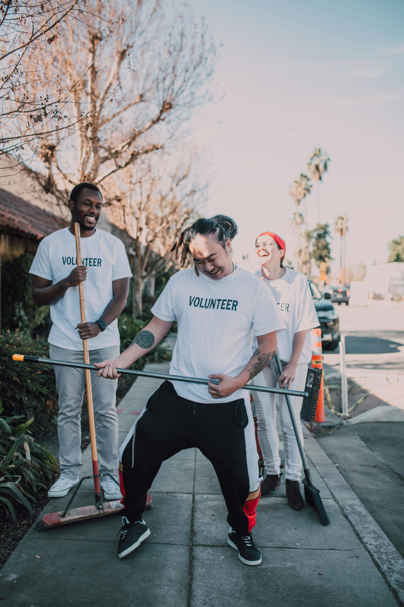

Mutirão Ambiental
Projeto voltado à limpeza de praias e conscientização sobre o descarte de resíduos. Envolvemos escolas e comunidades locais para promover o cuidado com o meio ambiente.
Projeto voltado à limpeza de praias e conscientização sobre o descarte de resíduos. Envolvemos escolas e comunidades locais para promover o cuidado com o meio ambiente.
Iniciativa que fornece materiais e aulas de reforço escolar para crianças em situação de vulnerabilidade social.
Você pode contribuir como voluntário ou através de doações financeiras. Cada ajuda faz a diferença!